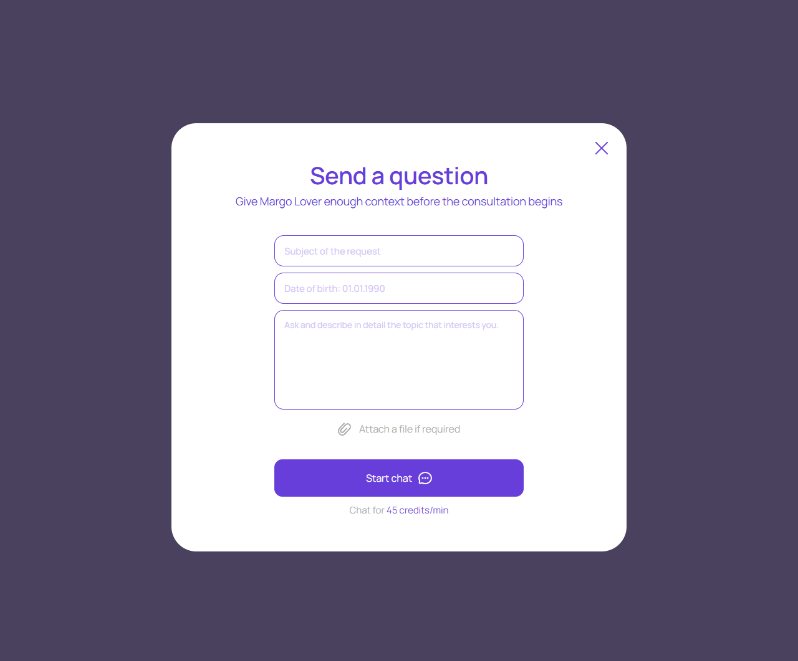
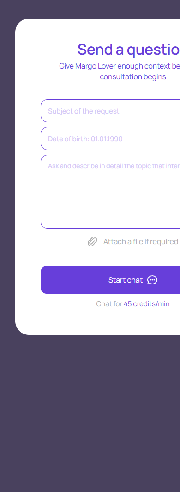

Вопрос перед консультацией
account/question-before-start.html
Передать тему и контекст выбранному эксперту.
| Когда открывается | Send question / Start flow |
|---|---|
| Данные | Тема; дата рождения; вопрос; разрешенные вложения; expertId. |
| Сценарий | Start chat валидирует и отправляет вопрос в постоянный диалог; дальнейшая оплата и согласие отдельны. |
| Переходы | Постоянный диалог · Пополнение перед началом |
Цена под кнопкой должна совпасть с текущим предложением; надпись сама не является согласием на автоматическое списание.
Общая и предметная логика. Снимки и подписи элементов — исходная редакция макета; поздние уточнения ТЗ имеют приоритет в своей области. Это не проверка текущего сайта.
Состояние 1280 · 1280 × 1062


Элементы и ожидаемые действия
| Элемент | Название в макете | Действие | Ожидаемый результат |
|---|---|---|---|
| E001 Виден | Close | Закрыть локальное окно или вернуться к инициатору; Stay отменяет намерение завершить. | Вернуть фокус и исходный контекст. Не выполнять оплату, удаление или Complete. При неизвестном результате платежа сначала сверить заказ. |
| E002 Виден | Subject of the request | Заполнить поле текущей формы: Subject of the request. | Черновик сохраняется при ошибке; допустимая длина/обязательность валидируются сервером. Отправка относится к сценарию «Вопрос перед консультацией». |
| E003 Виден | Date of birth: 01.01.1990 | Ввести реальную календарную дату в указанном формате. | Будущая/невозможная дата отклоняется. Возрастной допуск берется из утвержденных правил, не из fixture. |
| E004 Виден | Ask and describe in detail the topic that interests you. | Заполнить поле текущей формы: Ask and describe in detail the topic that interests you.. | Черновик сохраняется при ошибке; допустимая длина/обязательность валидируются сервером. Отправка относится к сценарию «Вопрос перед консультацией». |
| E005 Виден | Attach a file if required | Выбрать разрешенное вложение; показать preview и возможность убрать до отправки. | Проверить MIME/размер/права, загрузку и ошибку; выбор локального файла не означает отправку сообщения. |
| E006 Виден | Start chat | Продолжить сценарий «Вопрос перед консультацией»: Start chat валидирует и отправляет вопрос в постоянный диалог; дальнейшая оплата и согласие отдельны. | Сохраняются expertId/dialogId; вопрос, согласие, funding и operator Start не объединяются. Нажатие само не запускает платное время. |
Состояние 390 · 390 × 1062


Элементы и ожидаемые действия
| Элемент | Название в макете | Действие | Ожидаемый результат |
|---|---|---|---|
| E001 Виден | Close | Закрыть локальное окно или вернуться к инициатору; Stay отменяет намерение завершить. | Вернуть фокус и исходный контекст. Не выполнять оплату, удаление или Complete. При неизвестном результате платежа сначала сверить заказ. |
| E002 Виден | Subject of the request | Заполнить поле текущей формы: Subject of the request. | Черновик сохраняется при ошибке; допустимая длина/обязательность валидируются сервером. Отправка относится к сценарию «Вопрос перед консультацией». |
| E003 Виден | Date of birth: 01.01.1990 | Ввести реальную календарную дату в указанном формате. | Будущая/невозможная дата отклоняется. Возрастной допуск берется из утвержденных правил, не из fixture. |
| E004 Виден | Ask and describe in detail the topic that interests you. | Заполнить поле текущей формы: Ask and describe in detail the topic that interests you.. | Черновик сохраняется при ошибке; допустимая длина/обязательность валидируются сервером. Отправка относится к сценарию «Вопрос перед консультацией». |
| E005 Виден | Attach a file if required | Выбрать разрешенное вложение; показать preview и возможность убрать до отправки. | Проверить MIME/размер/права, загрузку и ошибку; выбор локального файла не означает отправку сообщения. |
| E006 Виден | Start chat | Продолжить сценарий «Вопрос перед консультацией»: Start chat валидирует и отправляет вопрос в постоянный диалог; дальнейшая оплата и согласие отдельны. | Сохраняются expertId/dialogId; вопрос, согласие, funding и operator Start не объединяются. Нажатие само не запускает платное время. |